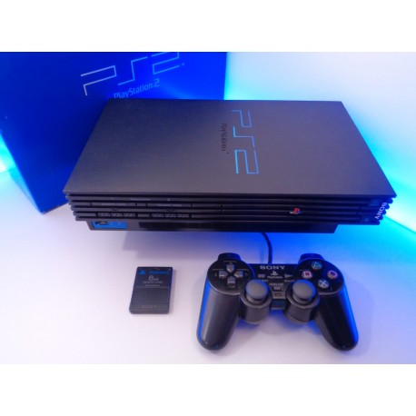
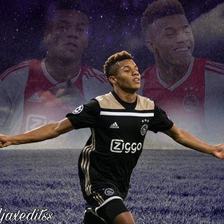

Gamen
In mijn vrije tijd game ik graag. Dat doe ik altijd met vrienden. ik ben begonnen met gamen toen ik de playstation 2 kreeg van mijn ouders. ik was toen 13 jaar. Toen speelde ik veel FIFA en Tekken. Mijn ouders kochten daarna een WII. Daar speelde ik veel Skylanders en ook FIFA. Later had ik een XBOX One gekocht van mijn geld dat ik heb gespaard via mijn eerste baantje. Mijn XBOX had ik niet lang. Al mijn vrienden hadden een playstation. Dat was ook de reden dat ik een playstation had gekocht. 
Badmintonnen
Op dit moment doe ik de sport badminton. Ik zit hier nu net 1 jaar op en doe dit nogsteeds met erg veel plezier. op dit moment staan we
op de 4e plek van de 12 teams die in mijn competitie zitten. Ik ben op badminton gegaan omdat een vriend van mij mij een keer mee vroeg
om mee te gaan voor de lol. Ik vond het gelijk al leuk door de leuke mensen die daar zitten en training geven.

Voetballen
Ik heb heel lang op voetbal gezeten. Om precies te zijn heb ik 10 jaar op voetbal gezeten. Wat ik het er het leukst aan vond was dat je lekker je energie erin kwijt kon en natuurlijk kan je winnen en dat wil ik heel graag. ik ben heel fantiek namelijk. Ik volg nu nog steeds voetbal op televisie. ik ben natuurlijk voor de topclub Ajax. 